# devtools::install_github("derekmichaelwright/agData")
library(agData) # Loads: tidyverse, ggpubr, ggbeeswarm, ggrepel
library(gganimate)# Prep Data
colors <- c("darkcyan", "darkorange", "darkgreen")
ee <- c("Open-Pollination", "Hybrid", "Biotech")
xx <- agData_USDA_Crops %>%
filter(Crop == "Maize") %>%
mutate(Era = ifelse(Year < 1937, ee[1],
ifelse(Year < 1996, ee[2],
ee[3])),
Era = factor(Era, levels = ee))
x1 <- xx %>% filter(Measurement == "Yield")
# Prep rect data
x2 <- x1 %>% group_by(Era) %>% summarise(min = min(Year), max = max(Year))
# Calculate slopes
c1 <- x1 %>% filter(Era == ee[1])
c2 <- x1 %>% filter(Era == ee[2])
c3 <- x1 %>% filter(Era == ee[3])
c1 <- round(summary(lm(data = c1, Value ~ Year))$coefficients[2], 3)
c2 <- round(summary(lm(data = c2, Value ~ Year))$coefficients[2], 3)
c3 <- round(summary(lm(data = c3, Value ~ Year))$coefficients[2], 3)
# Plot Yields
mp <- ggplot(x1) +
geom_rect(data = x2, alpha = 0.1,
aes(xmin = min-0.5, xmax = max+0.5, ymin = -Inf, ymax = Inf, fill = Era)) +
geom_line(aes(x = Year, y = Value, color = Era), size = 1.5, alpha = 0.8) +
scale_color_manual(name = "Era:", values = colors) +
scale_fill_manual(name = "Era:", values = colors) +
scale_x_continuous(breaks = seq(1865, 2015, 10), minor_breaks = NULL) +
coord_cartesian(xlim = c(1865, 2018), ylim = c(0, 11.5), expand = F) +
theme_agData(legend.position = "bottom", rotx = T) +
labs(title = "Maize Yields in the United States", y = "Tonnes / Hectare", x = NULL,
caption = "\xa9 www.dblogr.com/ | Data: USDA")
mp1 <- mp +
geom_smooth(aes(x = Year, y = Value, group = Era), method = "lm", se = F,
color = alpha("black", 0.6)) +
annotate("text", x = 1900, y = 2.75, size = 4, label = paste("m =", c1)) +
annotate("text", x = 1965, y = 6.5, size = 4, label = paste("m =", c2)) +
annotate("text", x = 2005, y = 11, size = 4, label = paste("m =", c3))
ggsave("maize_usa_01.png", mp1, width = 6, height = 4)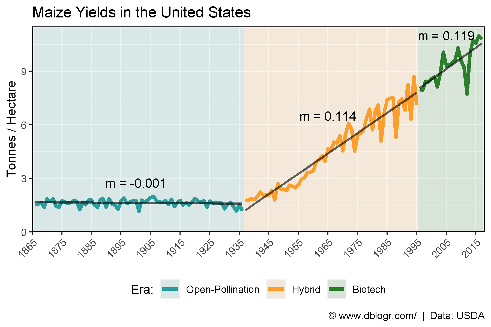
mp <- mp +
# gganimate specific bits
transition_reveal(Year) +
ease_aes('linear')
anim_save("maize_usa_gifs_01.gif", mp, width = 600, height = 400)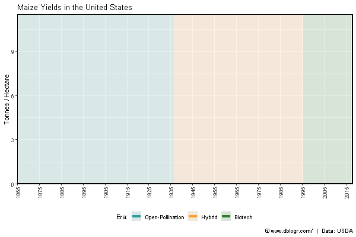
# Prep data
ee <- c(ee, "Yield Contest")
colors <- c("darkcyan", "darkorange", "darkgreen", "darkred")
x3 <- agData_MaizeContest %>%
filter(Unit == "Tonnes/Hectare") %>%
mutate(Era = "Yield Contest") %>%
group_by(Era, Year) %>%
summarise(Value = mean(Value))
x3 <- bind_rows(x1, x3) %>%
mutate(Era = factor(Era, levels = ee))
# Plot
mp <- ggplot(x3, aes(x = Year, y = Value, color = Era)) +
geom_line(size = 1.5, alpha = 0.8) +
scale_color_manual(name = NULL, values = colors) +
scale_x_continuous(breaks = seq(1865, 2015, 10), minor_breaks = NULL) +
coord_cartesian(xlim = c(1865, 2019), ylim = c(0, 27), expand = F) +
theme_agData(legend.position = "bottom", rotx = T,
legend.text=element_text(size = 7)) +
labs(title = "Maize Yields in the United States", y = "Tonnes / Hectare", x = NULL,
caption = "\xa9 www.dblogr.com/ | Data: USDA & NCGA")
ggsave("maize_usa_02.png", mp, width = 6, height = 4)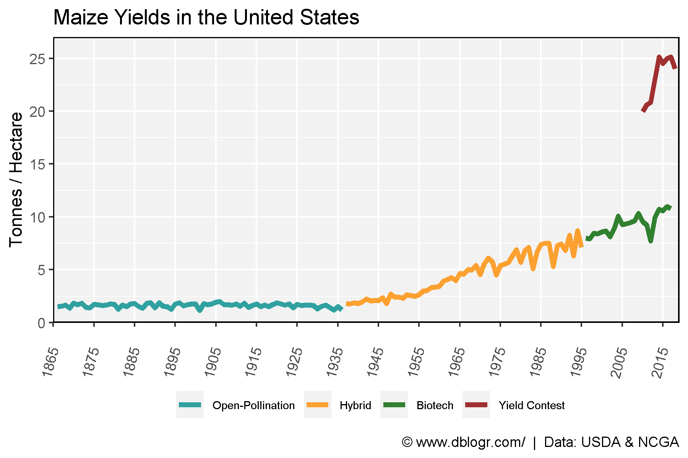
# Prep Data
x1 <- xx %>% filter(Measurement %in% c("Area harvested", "Production"))
colors <- c("darkcyan", "darkorange", "darkgreen", "darkred")
labels <- c("Area Harvested (Hectares)", "Production (Tonnes)")
# Plot Production
mp <- ggplot(x1) +
#geom_rect(data = x2, alpha = 0.1,
# aes(xmin = min-0.5, xmax = max+0.5, ymin = -Inf, ymax = Inf, fill = Era)) +
geom_line(aes(x = Year, y = Value / 1000000, color = Measurement), size = 1.5, alpha = 0.8) +
guides(fill = F) +
scale_fill_manual(values = cols) +
scale_fill_manual(name = "Era:", values = colors) +
scale_color_manual(name = NULL, values = colors, labels = labels) +
scale_x_continuous(breaks = seq(1865, 2015, 10), minor_breaks = NULL) +
coord_cartesian(xlim = c(1865, 2018), ylim = c(0,400), expand = c(0, 0)) +
theme_agData(legend.position = "bottom", rotx = T) +
labs(title = "Maize Production in the United States", y = "Million", x = NULL,
caption = "\xa9 www.dblogr.com/ | Data: USDA")
ggsave("maize_usa_03.png", mp, width = 6, height = 4)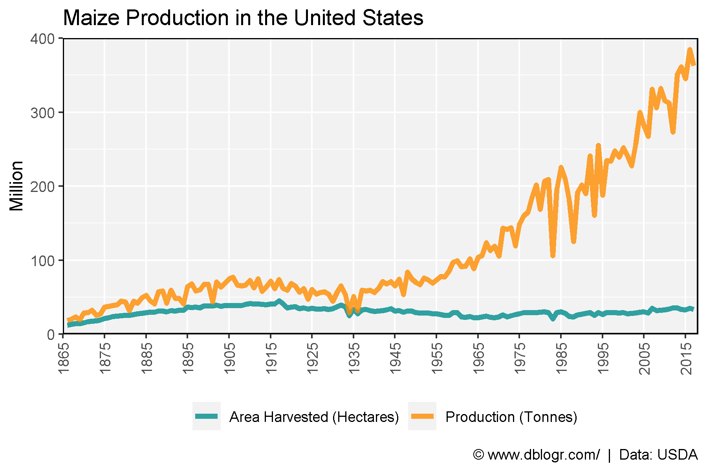
# Prep Data
colors <- c("darkcyan", "darkred", "darkgoldenrod2", "darkgreen")
x1 <- agData_USDA_Crops %>% filter(Crop == "Maize", Measurement == "Yield")
x2 <- agData_FAO_Crops %>% filter(Crop == "Maize", Measurement == "Yield",
Area %in% c("Germany","Mexico","Africa"))
xx <- bind_rows(x1, x2) %>%
mutate(Area = factor(Area, levels = c("USA", "Germany", "Mexico", "Africa")))
# Plot
mp <- ggplot(xx, aes(x = Year, y = Value,color = Area)) +
geom_line(size = 1.5, alpha = 0.8) +
scale_color_manual(name = NULL, values = colors) +
scale_x_continuous(breaks = seq(1865, 2015, 10), minor_breaks = NULL) +
coord_cartesian(xlim = c(1865, 2018), ylim = c(0, 11.5), expand = c(0, 0)) +
theme_agData(legend.position = "bottom", rotx = T) +
labs(title = "Maize Yields - Developed vs Developing Countries",
y = "Tonnes / Hectare", x = NULL,
caption = "\xa9 www.dblogr.com/ | Data: USDA & FAOSTAT")
ggsave("maize_usa_04.png", mp, width = 6, height = 4)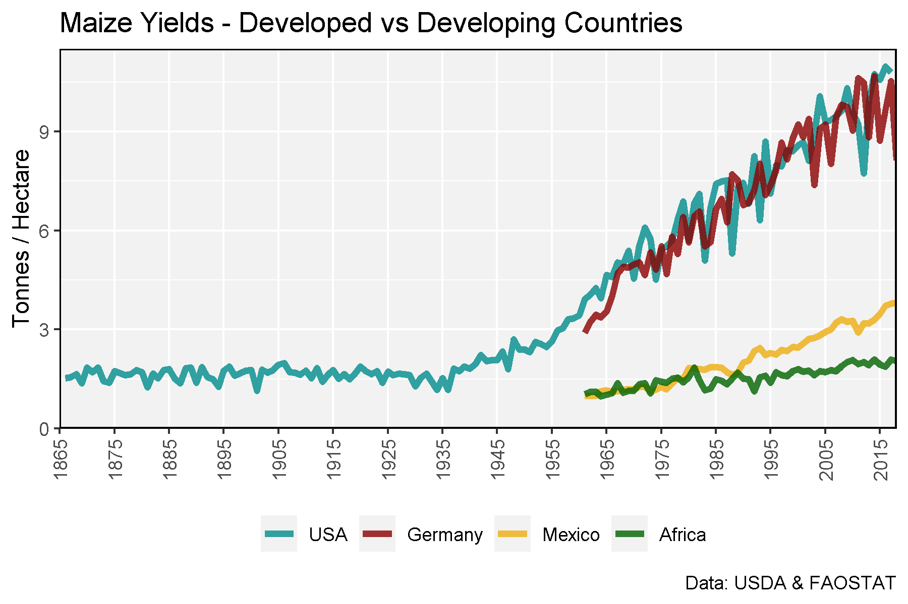
# Prep data
x1 <- agData_MaizeContest %>%
filter(Unit == "Tonnes/Hectare")
x2 <- agData_USDA_Crops %>%
filter(Crop == "Maize", Measurement == "Yield", Year >= min(x1$Year)) %>%
mutate(Measurement = "Commercial Average")
xx <- bind_rows(x1, x2) %>%
arrange(desc(Value)) %>%
mutate(Measurement = factor(Measurement, levels = unique(Measurement)))
# Plot
mp <- ggplot(xx, aes(x = Year, y = Value, color = Measurement, group = Measurement)) +
geom_line(size = 1.5, alpha = 0.8) +
scale_color_manual(name = NULL, values = agData_Colors) +
theme_agData() +
labs(title = "Maize Yield Contests in the United States",
y = "Tonnes / Hectare", x = NULL,
caption = "\xa9 www.dblogr.com/ | Data: USDA & NCGA")
ggsave("maize_usa_05.png", mp, width = 6, height = 4)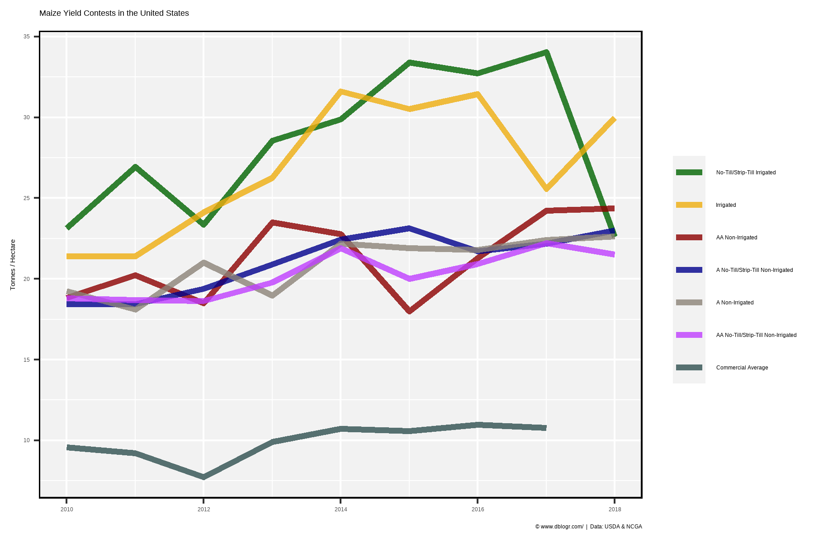
# Prep data
x1 <- agData_MaizeContest %>% filter(Unit == "Tonnes/Hectare") %>%
group_by(Year) %>% summarise(Value = max(Value)) %>%
mutate(Measurement = "Max Yield")
x2 <- agData_USDA_Crops %>%
filter(Crop == "Maize", Year > 1990, Measurement == "Yield") %>%
mutate(Measurement = "Avereage Yield")
xx <- bind_rows(x1, x2)
# Plot
mp <- ggplot(xx, aes(x = Year, y = Value, color = Measurement, group = Measurement)) +
geom_line(size = 1.5, alpha = 0.8) +
scale_x_continuous(breaks = seq(1990, 2020, by = 5)) +
scale_color_manual(values = c("darkgreen", "darkred")) +
theme_agData(legend.position = "bottom") +
labs(title = "Max vs. Average Maize Yield in the United States",
y = "Tonnes / Hectare", x = NULL,
caption = "\xa9 www.dblogr.com/ | Data: USDA & NCGA")
ggsave("maize_usa_06.png", mp, width = 6, height = 4)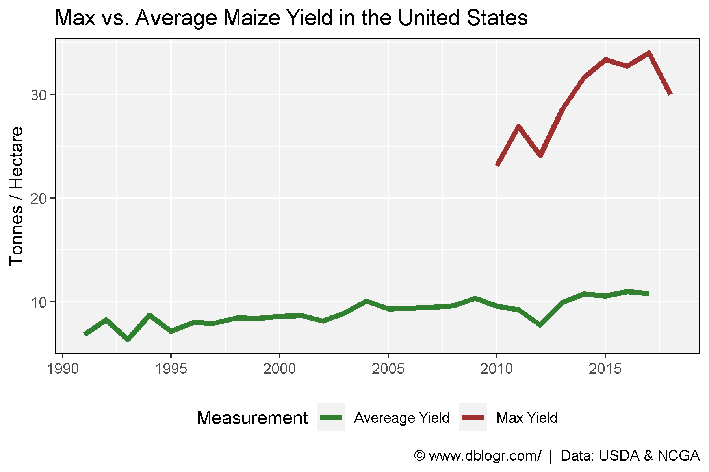
# Prep data
xx <- agData_USDA_Crops %>%
filter(Crop == "Maize", Measurement == "Yield") %>%
mutate(Value = 1 / Value)
# Plot
mp <- ggplot(xx, aes(x = Year, y = Value)) +
geom_bar(stat = "identity", color = "black", fill = "darkgreen", alpha = 0.75) +
scale_x_continuous(breaks = seq(1865, 2015, 10), minor_breaks = NULL) +
theme_agData() +
labs(title = "Hectares Needed To Produce 1 Tonne of Maize",
y = NULL, x = NULL,
caption = "\xa9 www.dblogr.com/ | Data: USDA")
ggsave("maize_usa_07.png", mp, width = 6, height = 4)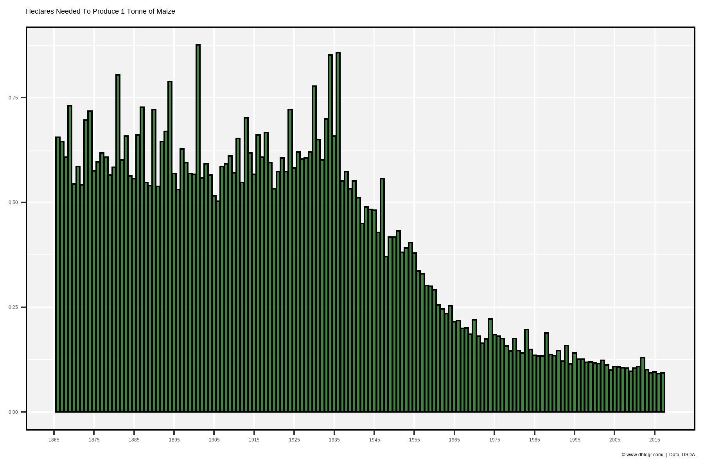
# Prep data
xx <- xx %>% filter(Year %in% seq(1875, 2015, by = 10))
# Plot
mp <- ggplot(xx, aes(x = Year, y = Value)) +
geom_bar(stat = "identity", color = "black", fill = "darkgreen", alpha = 0.75) +
scale_x_continuous(breaks = seq(1875, 2015, 10), minor_breaks = NULL) +
theme_agData() +
labs(title = "Hectares Needed To Produce 1 Tonne of Maize",
y = NULL, x = NULL,
caption = "\xa9 www.dblogr.com/ | Data: USDA")
ggsave("maize_usa_08.png", mp, width = 6, height = 4)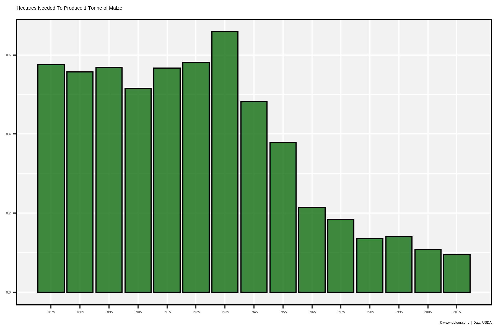
# Prep data
xx <- agData_USDA_Crops %>% filter(Crop == "Maize", Year >= 1940)
y1 <- xx %>% filter(Year == 1940, Measurement == "Yield") %>% pull(Value)
x1 <- xx %>% filter(Measurement == "Area harvested") %>%
mutate(Value = Value * y1, Measurement = "1940 Yields")
xx <- xx %>% filter(Measurement == "Production") %>%
mutate(Measurement = "Actual Yields") %>%
bind_rows(x1)
# Plot
mp <- ggplot(xx, aes(x = Year, y = Value / 1000000, color = Measurement)) +
geom_line(size = 1.5, alpha = 0.8) +
scale_color_manual(name = NULL, values = c("darkred", "darkgreen")) +
scale_x_continuous(breaks = seq(1940, 2020, 10)) +
theme_agData(legend.position = "bottom") +
labs(title = "USA Maize Production",
subtitle = "Based on Actual Yields vs. 1940 Yields",
y = "Million Tonnes", x = NULL,
caption = "\xa9 www.dblogr.com/ | Data: USDA")
ggsave("maize_usa_09.png", mp, width = 6, height = 4)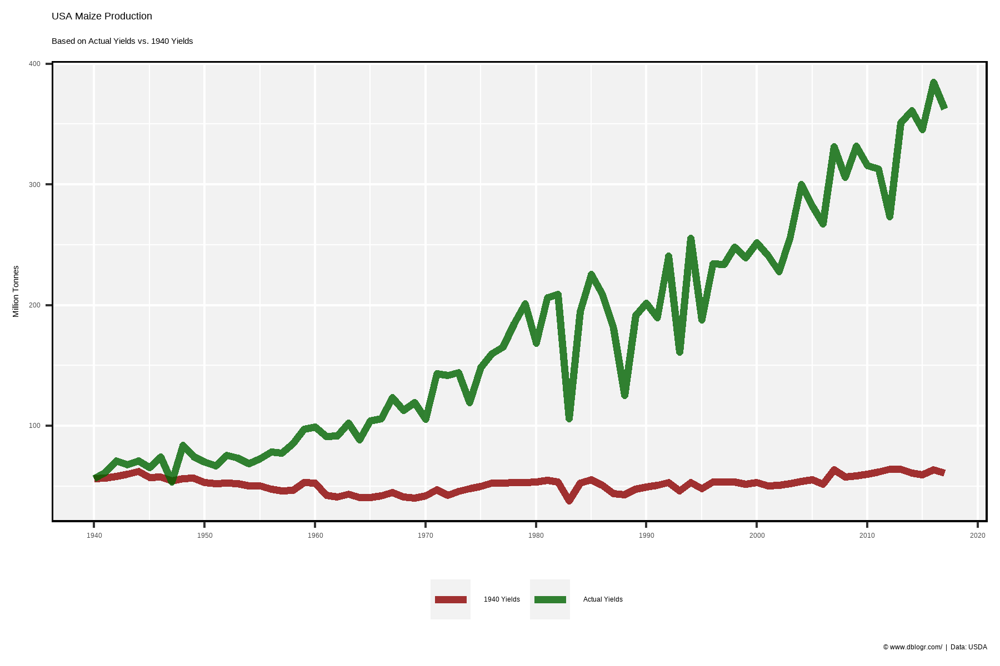
# Prep data
xx <- xx %>% select(-Unit) %>%
spread(Measurement, Value) %>%
mutate(Difference = `Actual Yields` - `1940 Yields`)
# Plot
mp <- ggplot(xx, aes(x = Year, y = Difference / 1000000)) +
geom_line(size = 1.5, alpha = 0.8, color = "darkgreen") +
scale_x_continuous(breaks = seq(1940, 2020, 10)) +
theme_agData() +
labs(title = "Additional Maize Production Based on Yield Gains After 1940",
y = "Million Tonnes", x = NULL,
caption = "\xa9 www.dblogr.com/ | Data: USDA")
ggsave("maize_usa_10.png", mp, width = 6, height = 4)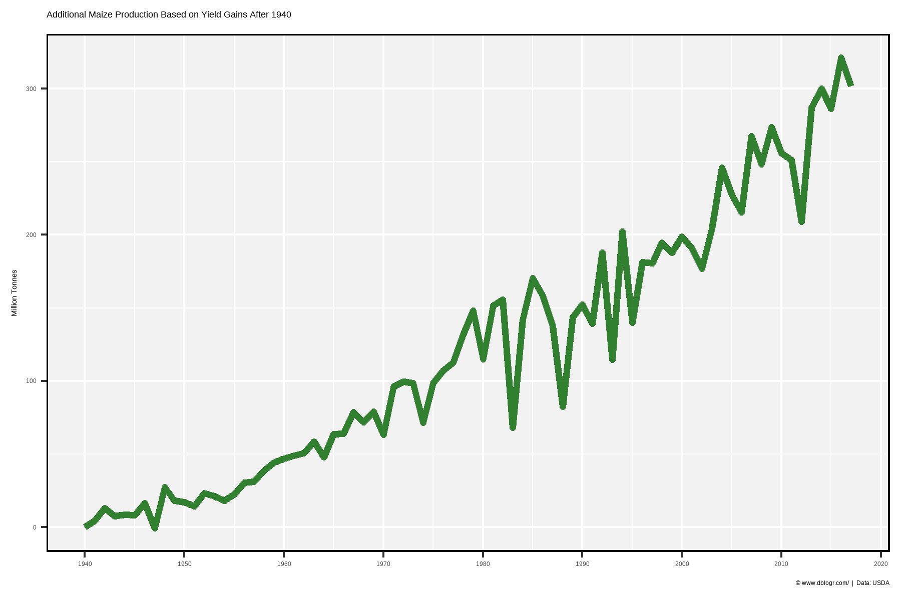
© Derek Michael Wright www.dblogr.com/